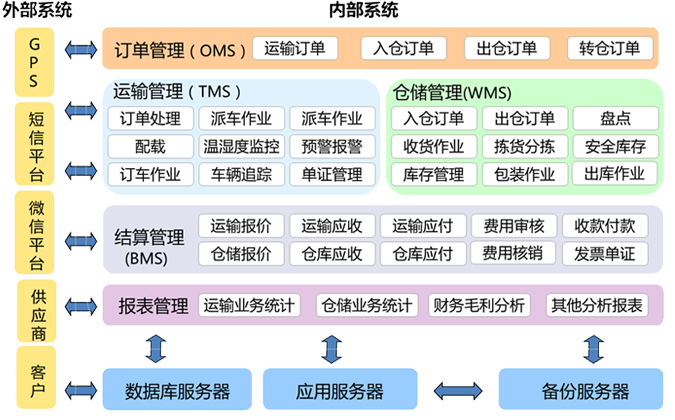

成就客户、追求极致、团队合作、艰苦奋斗、开放进去、互利共赢
- 应用背景
- 适用环境
- 特点
- 带来效果
应用背景
高思3pl企业管理系统支持
业务模式：支持仓储业务，支持运输业务，支持仓储、运输综合业务；
订单管理： EDI和数据导入导出，减少作业误差；作业过程进度提醒；可供客户实时查询订单状态与回单远程在线签收；
运输管理：支持公路零担、整车、多式联运、城市配送运输方式，支持自有、挂靠、合资、临租、外包、承包等运力组织模式，支持快消品行业复杂的配载方式；
仓储管理：支持多货主，对仓储管理的收、发、存业务全流程的支持；支持简单的库内加工；
车辆管理：支持自有、挂靠、合资、临租、外包、承包等车辆合作模式，支持司机信息、车辆信息、证件信息等资料的智能管理；
费用管理：高思自主研发可配置化模块支持复杂的应收应付报价方案，支持不同企业组织架构的行政费用管理成本分摊计算；支持应收应付自动统计，对账单的生成；支持客户对账、开票、回款过程跟踪；
智能应用：丰富的经营报表和数据分析；
